자가진단
현재 상태를 체크해보세요.
아래의 거북목 자가진단 내용은 건강정보를 제공하기 위한 목적으로, 정확한 의학적 진단이 아니므로 참고용으로만 사용하시기
바랍니다.
또한 거북목이 의심된다면 전문 의료진을 통해 정확한 진단을 받는 것이 좋습니다.
 

아래의 거북목 자가진단 내용은 건강정보를 제공하기 위한 목적으로, 정확한 의학적 진단이 아니므로 참고용으로만 사용하시기
바랍니다.
또한 거북목이 의심된다면 전문 의료진을 통해 정확한 진단을 받는 것이 좋습니다.